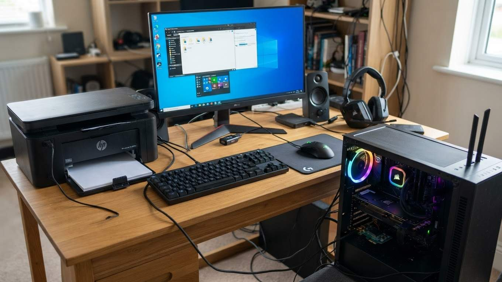
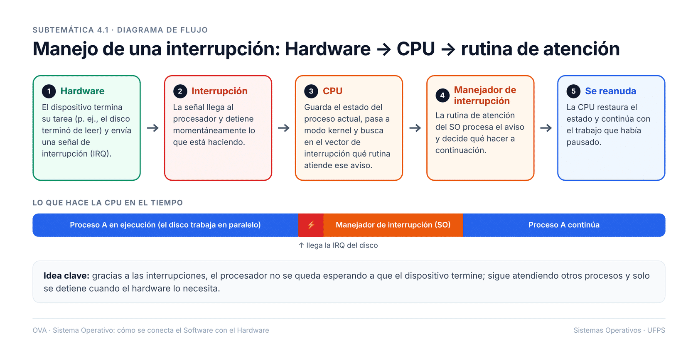
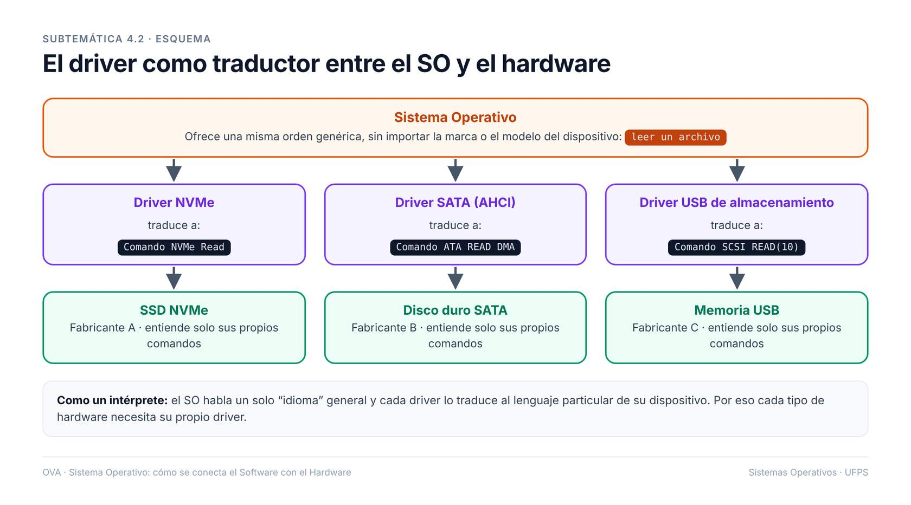

4. Interrupciones y Drivers en la Comunicación SO-Hardware

distintos dispositivos de hardware conectados a un computador (impresora, mouse, memoria USB, tarjeta de red).

Hardware → CPU → rutina de atención

el driver como traductor entre el SO y el hardware
¿Por qué el SO no se comunica directamente con cada dispositivo sin drivers?
El sistema operativo (SO) utiliza drivers para comunicarse con los dispositivos porque estos actúan como intermediarios que traducen las instrucciones del SO en comandos específicos que el hardware puede entender. Sin drivers, el SO tendría que incluir soporte para cada dispositivo existente, lo cual sería impráctico y poco eficiente.
Los drivers permiten una mayor flexibilidad y modularidad, ya que cada dispositivo puede tener su propio controlador especializado que se integra con el SO sin necesidad de modificarlo directamente.
¿Qué ventajas aporta el mecanismo de interrupciones frente a la espera activa?
El mecanismo de interrupciones permite que el procesador realice otras tareas mientras espera eventos de los dispositivos, en lugar de permanecer en un estado de espera activa que consume recursos constantemente. Esto mejora la eficiencia del sistema y reduce el consumo de energía.
Además, las interrupciones aseguran una respuesta más rápida a eventos importantes, ya que el procesador puede ser notificado inmediatamente cuando ocurre un evento, en lugar de depender de verificaciones periódicas.
¿Cómo se relacionan el manejador de interrupciones y el driver en el procesamiento de una solicitud?
El manejador de interrupciones es responsable de capturar las señales de interrupción generadas por los dispositivos y notificar al sistema operativo. Una vez que se procesa la interrupción, el driver correspondiente toma el control para manejar los detalles específicos del dispositivo.
Esta colaboración asegura que las interrupciones sean gestionadas de manera eficiente y que las operaciones del dispositivo se realicen correctamente, manteniendo la estabilidad y funcionalidad del sistema.
¿Qué riesgos existirían si un driver estuviera mal diseñado o manipulado?
Un driver mal diseñado o manipulado puede causar inestabilidad en el sistema operativo, como bloqueos o errores inesperados. Además, puede exponer vulnerabilidades de seguridad que podrían ser explotadas por atacantes para comprometer el sistema.
Por esta razón, es crucial que los drivers sean desarrollados y mantenidos siguiendo estándares estrictos de calidad y seguridad, y que provengan de fuentes confiables.
Una señal que indica al procesador que debe detener su tarea actual para atender un evento específico.
Software que permite la comunicación entre el sistema operativo y un dispositivo de hardware.
Un programa que gestiona las interrupciones y determina cómo responder a ellas.
Un dispositivo o software que regula el funcionamiento de un componente de hardware.
Un componente de hardware que realiza una función específica dentro de un sistema informático.
Una dirección en memoria que apunta al manejador de interrupciones correspondiente.
La unidad central de procesamiento que ejecuta instrucciones en un sistema informático.
Una línea de hardware que permite a los dispositivos solicitar atención del procesador.
Haz clic en cada tarjeta para ver la respuesta.